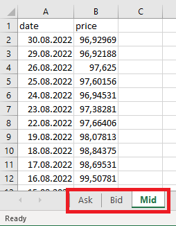
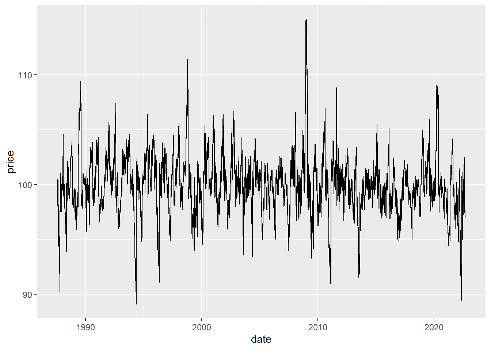
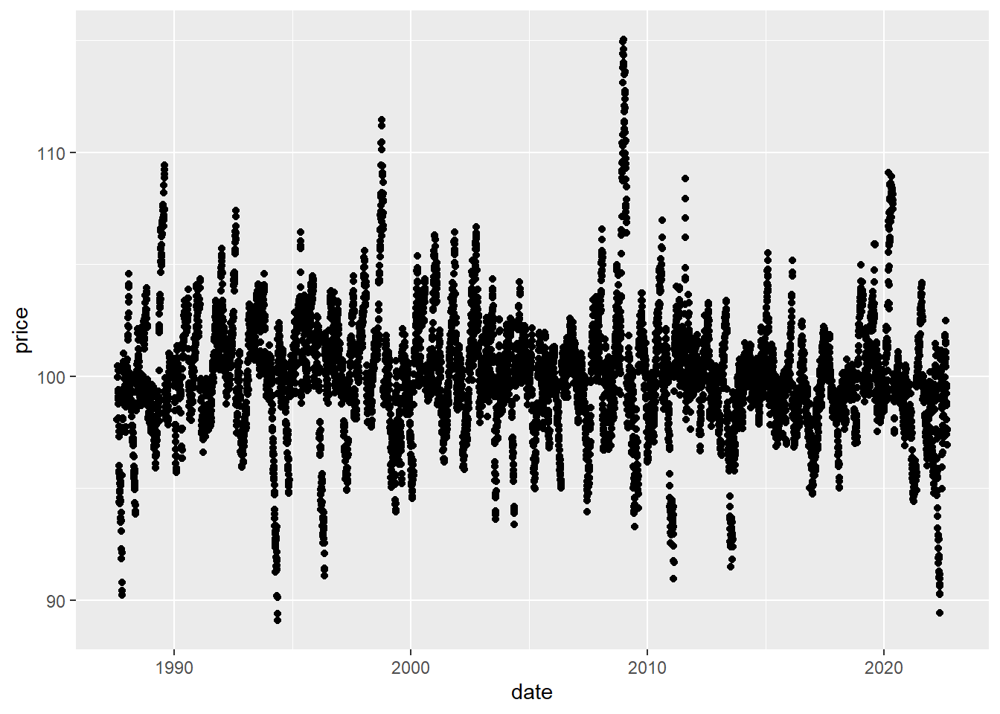
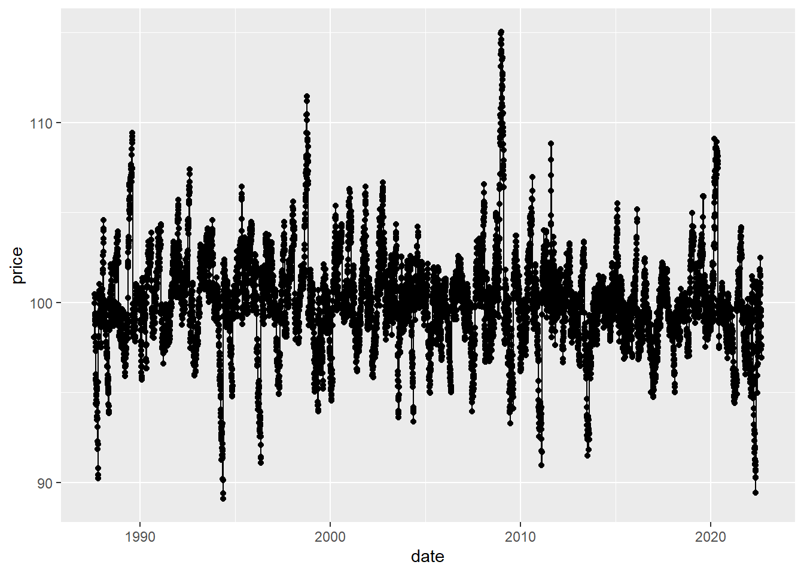
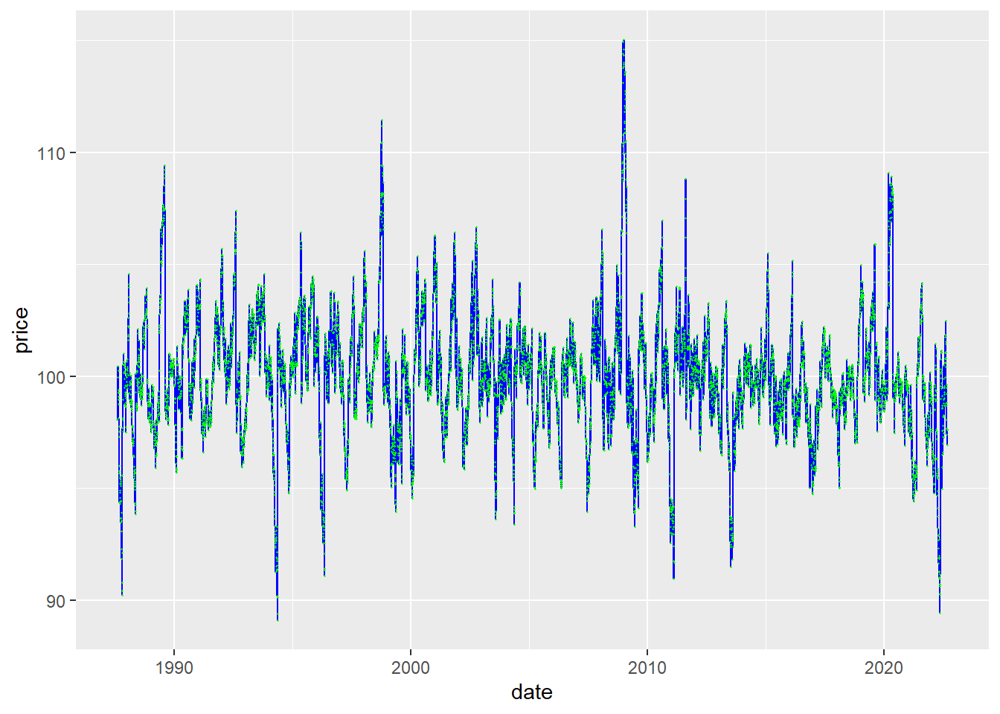
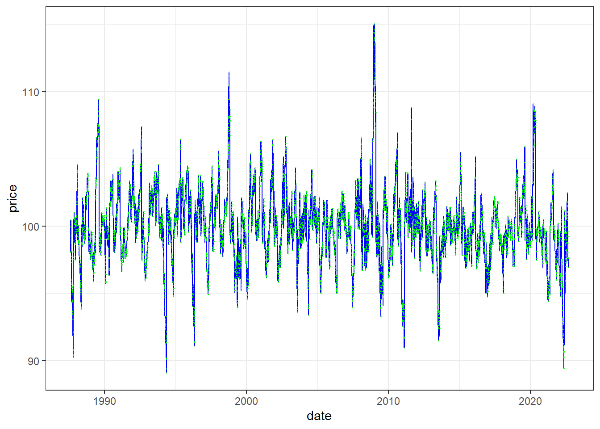
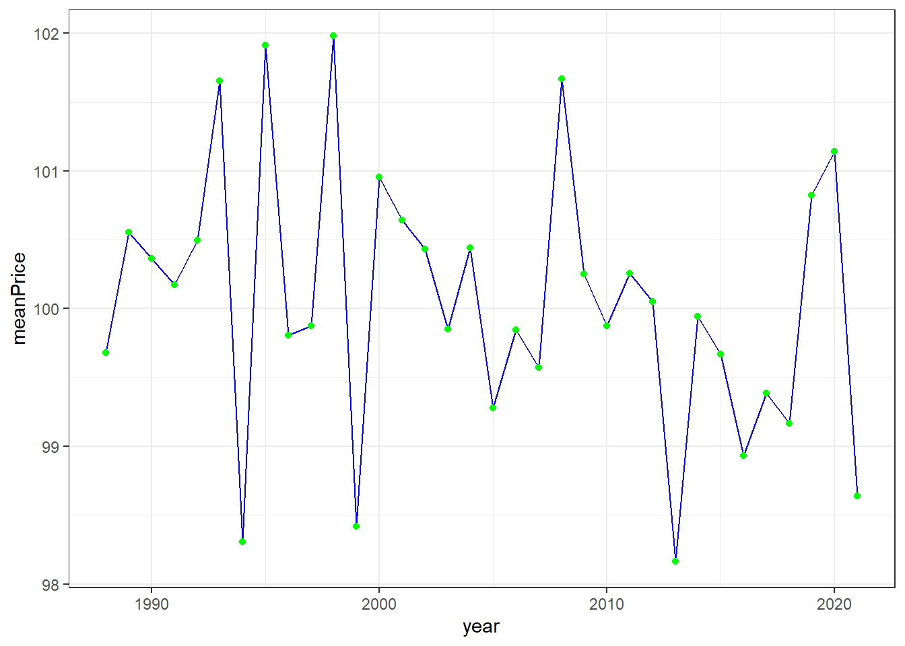

install.packages("fpp3", dependencies = TRUE)R and Rstudio
In this course, we will be using R and Rstudio to e.g. visualize time series, estimate model parameters, forecast, etc. It is therefore essential to have some basic knowledge of how to write an R script and how to read in data and do some simple data manipulation for preparing the data for different time series analysis. Hopefully, most of you have some experience with R and Rstudio before. If you have, this will be a short recap, if not this will be a very short introduction covering the most basic operations.
Installing R and Rstudio
- Install R:
- Go to: cran.uib.no
- Press download R for Linux/MacOS/Windows
- Press base
- Download R-4.x.x for Linux/MacOS/Windows
- Run the installation using default options
- Install Rstudio
- Go to: rstudio.com
- Select Rstudio desktop
- Press Download Rstudio desktop
- Select the Rstudio desktop with open source licence, which is free
- Select the version for your operating system
- Run the installation using default settings
- Open Rstudio and check that it works (it should start without any error messages).
- Install the R-package of the book “fpp3”.
- In Rstudio, select Tools -> Install packages -> write “fpp3” and make sure install dependencies is marked. Press Install. You can also run the following code in the console
Other useful packages to install are
install.packages("tidyverse", dependencies = TRUE)
install.packages("readxl")(will add other packages as we go)
R recap
If R and Rstudio are completely new tools for you, this section will probably not be detailed enough to get you started, but fear not. There are lots of good and useful online material for learning basic R. One possibility is to work through the first section of (chapter 1-8) of the book R for data science by @wickham2016r available online. There is also a free Coursera course on R programming, recommended by the textbook authors.
We will mostly be using the tidyverse approach to doing data manipulation. This is in line with what you learn in courses like BAN400 R programming for Data Science or BAN420 Introduction to R and also with what the authors of the textbook does (@hyndman2018).
Say you are given an .xlsx file (MS excel format) of daily prices of an US 10 year Treasury bond. The excel file contains several sheets with the
- Closing ask price (“Ask”)
- Closing bid price (“Bid”)
- Closing mid price (“Mid”)
Each contains two columns: date and price. In the figure below we have taken a screen shot of the Mid sheet.

You are interesting in reading in the closing mid price. To read in this data, you may use the following code.
library(fpp3) # loading textbook package
library(tidyverse)
library(readxl) # loading package for reading excel files
dat <- read_excel("data/US10YTRR.xlsx", sheet = "Mid")
head(dat) # printing out the first 6 rows# A tibble: 6 × 2
date price
<dttm> <dbl>
1 2022-08-30 00:00:00 96.9
2 2022-08-29 00:00:00 96.9
3 2022-08-26 00:00:00 97.6
4 2022-08-25 00:00:00 97.6
5 2022-08-24 00:00:00 96.9
6 2022-08-23 00:00:00 97.4The sheet argument specifies which sheet in the excel file we want to read. The read_excel function is also quite smart so it recognizes that the date column is a date and automatically format it accordingly. It is however perhaps not so useful to also include the time of the day (all is 00:00:00), so let us remove this part.
dat %>%
mutate(date = as.Date(date))# A tibble: 8,804 × 2
date price
<date> <dbl>
1 2022-08-30 96.9
2 2022-08-29 96.9
3 2022-08-26 97.6
4 2022-08-25 97.6
5 2022-08-24 96.9
6 2022-08-23 97.4
7 2022-08-22 97.7
8 2022-08-19 98.1
9 2022-08-18 98.8
10 2022-08-17 98.7
# … with 8,794 more rowsHere I have used the mutate function. This is a function we use to either mutate an existing column or create a new one. In this case we mutated the date column transforming it to a “Date” object. We could also be intersted in adding a column for which year the observation is from.
dat %>%
mutate(date = as.Date(date),
year = year(date))# A tibble: 8,804 × 3
date price year
<date> <dbl> <dbl>
1 2022-08-30 96.9 2022
2 2022-08-29 96.9 2022
3 2022-08-26 97.6 2022
4 2022-08-25 97.6 2022
5 2022-08-24 96.9 2022
6 2022-08-23 97.4 2022
7 2022-08-22 97.7 2022
8 2022-08-19 98.1 2022
9 2022-08-18 98.8 2022
10 2022-08-17 98.7 2022
# … with 8,794 more rowsHere we have used the year function from the lubridate package, which is loaded with the fpp3 package. The operator %>% is used to add operations to the data manipulation pipeline in the given order. We start with the data object (a tibble) and add a mutate operation to that where we first transform the date column and add a year column. Now that we are pleased with our pipeline, let us save this to the dat object.
dat <- dat %>%
mutate(date = as.Date(date),
year = year(date))
dat %>% glimpse()Rows: 8,804
Columns: 3
$ date <date> 2022-08-30, 2022-08-29, 2022-08-26, 2022-08-25, 2022-08-24, 202…
$ price <dbl> 96.92969, 96.92188, 97.62500, 97.60156, 96.94531, 97.38281, 97.6…
$ year <dbl> 2022, 2022, 2022, 2022, 2022, 2022, 2022, 2022, 2022, 2022, 2022…The glimpse function summarizes the tibble/data frame.
filter and select
Now, the data ranges from/to
range(dat$date)[1] "1987-08-03" "2022-08-30"but say you only want to use data from 2010 onwards. To do this, we use the filter function. This function is useful for selecting rows that fulfil some condition, in this case year >= 2010. Let us make a pipeline for this
dat %>%
filter(year >= 2010)# A tibble: 3,178 × 3
date price year
<date> <dbl> <dbl>
1 2022-08-30 96.9 2022
2 2022-08-29 96.9 2022
3 2022-08-26 97.6 2022
4 2022-08-25 97.6 2022
5 2022-08-24 96.9 2022
6 2022-08-23 97.4 2022
7 2022-08-22 97.7 2022
8 2022-08-19 98.1 2022
9 2022-08-18 98.8 2022
10 2022-08-17 98.7 2022
# … with 3,168 more rowsSince 2022 is not a complete year (in the data), you also don’t want observations after 2021. Then you can add this as an extra condition.
dat %>%
filter(year >= 2010, year <=2021)# A tibble: 3,012 × 3
date price year
<date> <dbl> <dbl>
1 2021-12-31 98.8 2021
2 2021-12-30 98.8 2021
3 2021-12-29 98.4 2021
4 2021-12-28 99.0 2021
5 2021-12-27 99.1 2021
6 2021-12-23 98.9 2021
7 2021-12-22 99.3 2021
8 2021-12-21 99.2 2021
9 2021-12-20 99.5 2021
10 2021-12-17 99.7 2021
# … with 3,002 more rowsAlternatively, you can use the between function
dat %>%
filter(between(year, 2010, 2021))which will produce the same result. Another useful function is called select. While filter is used on the rows of your data, select is for columns. Say we don’t need the year column after having filtered out the years we don’t want. We can then either select the columns we want to keep
dat %>%
filter(between(year, 2010, 2021)) %>%
select(date, price)or remove the columns we do not want
dat %>%
filter(between(year, 2010, 2021)) %>%
select(-year)# A tibble: 3,012 × 2
date price
<date> <dbl>
1 2021-12-31 98.8
2 2021-12-30 98.8
3 2021-12-29 98.4
4 2021-12-28 99.0
5 2021-12-27 99.1
6 2021-12-23 98.9
7 2021-12-22 99.3
8 2021-12-21 99.2
9 2021-12-20 99.5
10 2021-12-17 99.7
# … with 3,002 more rowsgroup_by and summarize
Say we are interested in calculating the yearly mean price. In the tidyverse pipeline this means we want to group our observations according to year and summarize by year the mean of the observations. We will filter to avoid having the first and last years that are incomplete.
dat %>%
filter(between(year, 1988, 2021)) %>%
group_by(year) %>%
summarize(meanPrice = mean(price))# A tibble: 34 × 2
year meanPrice
<dbl> <dbl>
1 1988 99.7
2 1989 101.
3 1990 100.
4 1991 100.
5 1992 100.
6 1993 102.
7 1994 98.3
8 1995 102.
9 1996 99.8
10 1997 99.9
# … with 24 more rowsThis pipeline could be read as first we take out observations prior to 1988 and after 2021, then we group the observations according to year and summarize the mean price by year. Note that this operation will delete any columns that are not in the group_by or being calculated in the summarize.
ggplot
Plotting a data frame is convenient to do using the ggplot2 package. This will (when used appropriately) produce beautiful figures. Let us plot the time series at hand. The ggplot2 follows the same logic with a pipeline, but instead of the %>% operator, we add elements to the figure using +. We need to specify the data object and the name of the x and y columns to be plotted. Everything in the figure that is to vary based on values in the data frame needs to be wrapped in a aes (aesthetic) function (here the x and y arguments). By adding the geom_line() we insert a line.
ggplot(data = dat,
aes(x=date, y = price)) +
geom_line()
We could instead add geom_point()
ggplot(data = dat,
aes(x=date, y = price)) +
geom_point()
or do both
ggplot(data = dat,
aes(x=date, y = price)) +
geom_line() +
geom_point()
We can change the colors and decrease the size of the points:
ggplot(data = dat,
aes(x=date, y = price)) +
geom_line(color = "blue") +
geom_point(color = "green", size = .2)
Or maybe we do not want to use the default theme: –>
ggplot(data = dat,
aes(x=date, y = price)) +
geom_line(color = "blue") +
geom_point(color = "green", size = .2) +
theme_bw()
We can also include the plotting in our data manipulation pipeline. For instance, lets summarize the data by year and plot the resulting yearly time series.
dat %>%
filter(between(year, 1988, 2021)) %>%
group_by(year) %>%
summarize(meanPrice = mean(price)) %>%
# adding plotting to pipeline:
ggplot(aes(x=year, y = meanPrice)) +
geom_line(color = "blue") +
geom_point(color = "green") +
theme_bw()
Epilogue
We cannot illustrate all aspects here, but you will learn new elements by studying examples throughout the course. This recap is mostly for remembering the basics of data manipulation in R and simple plotting. As you will see in the continuation, the coding is not much more complex then what you have seen here and the fpp3 package uses the same type of logic and syntax as the tidyverse. There will however be some new functions specific for time series analysis that you will need to learn.
Exercises
- Set working directory.
- Load the data.
- Filter away observations prior to 2010.
- Remove columns except .. and time
- Summarize data to monthly means
- Make a plot with time on x-axis and monthly means on y-axis
- Save the figure to file.